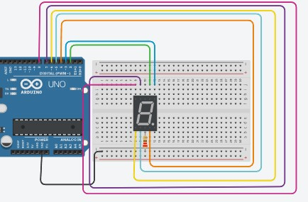

Principalㅤ
Projeto tinker semáforo simplesㅤ
Arduíno semáforo simplesㅤ
Semáforo duploㅤ
Semáforo duplo Arduínoㅤ
TinkerCadㅤ
TinkerCad 9 á 0ㅤ
projeto com Tinkercad – Contador crescente de 0 à 9:

Código C++
// C++ code
//
void setup()
{
pinMode(2, OUTPUT);
pinMode(3, OUTPUT);
pinMode(4, OUTPUT);
pinMode(5, OUTPUT);
pinMode(6, OUTPUT);
pinMode(7, OUTPUT);
pinMode(8, OUTPUT);
}
void loop()
{
digitalWrite(2, HIGH);
digitalWrite(3, HIGH);
digitalWrite(4, HIGH);
digitalWrite(5, HIGH);
digitalWrite(6, HIGH);
digitalWrite(7, HIGH);
digitalWrite(8, LOW);
delay(1000); // Wait for 1000 millisecond(s)
digitalWrite(2, LOW);
digitalWrite(3, HIGH);
digitalWrite(4, HIGH);
digitalWrite(5, LOW);
digitalWrite(6, LOW);
digitalWrite(7, LOW);
digitalWrite(8, LOW);
delay(1000); // Wait for 1000 millisecond(s)
digitalWrite(2, HIGH);
digitalWrite(3, HIGH);
digitalWrite(4, LOW);
digitalWrite(5, HIGH);
digitalWrite(6, HIGH);
digitalWrite(7, LOW);
digitalWrite(8, HIGH);
delay(1000); // Wait for 1000 millisecond(s)
}